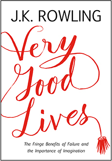
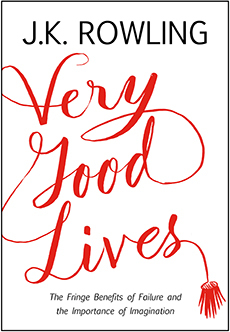

Non-Fiction
Wild

Quiet: The Power of Introverts in a World That Can't Stop Talking

How to Read Literature Like a Professor

Very Good Lives
Wild
Quiet: The Power of Introverts in a World That Can't Stop Talking
How to Read Literature Like a Professor
Very Good Lives

An incredible story of the emotionally raw, and at some points scary journey that Strayed pushed herself to endure to emerge a different person.
At twenty-two, Cheryl Strayed thought she had lost everything. In the wake of her mother’s death, her family scattered and her own marriage was soon destroyed. Four years later, with nothing more to lose, she made the most impulsive decision of her life. With no experience or training, driven only by blind will, she would hike more than a thousand miles of the Pacific Crest Trail from the Mojave Desert through California and Oregon to Washington State — and she would do it alone.
Told with suspense and style, sparkling with warmth and humor, Wild powerfully captures the terrors and pleasures of one young woman forging ahead against all odds on a journey that maddened, strengthened, and ultimately healed her.
First introduced to me in my high school English class, I found the premise of this book to be equally interesting and relatable. I'm eager to delve deeper into the psycology of a book that challenges the world's need for people to be extroverted.
At least one-third of the people we know are introverts. They are the ones who prefer listening to speaking, reading to partying; who innovate and create but dislike self-promotion; who favor working on their own over brainstorming in teams. Although they are often labeled "quiet," it is to introverts that we owe many of the great contributions to society--from van Gogh’s sunflowers to the invention of the personal computer.
Passionately argued, impressively researched, and filled with indelible stories of real people, Quiet shows how dramatically we undervalue introverts, and how much we lose in doing so. Taking the reader on a journey from Dale Carnegie’s birthplace to Harvard Business School, from a Tony Robbins seminar to an evangelical megachurch, Susan Cain charts the rise of the Extrovert Ideal in the twentieth century and explores its far-reaching effects. She talks to Asian-American students who feel alienated from the brash, backslapping atmosphere of American schools. She questions the dominant values of American business culture, where forced collaboration can stand in the way of innovation, and where the leadership potential of introverts is often overlooked. And she draws on cutting-edge research in psychology and neuroscience to reveal the surprising differences between extroverts and introverts.
Perhaps most inspiring, she introduces us to successful introverts--from a witty, high-octane public speaker who recharges in solitude after his talks, to a record-breaking salesman who quietly taps into the power of questions. Finally, she offers invaluable advice on everything from how to better negotiate differences in introvert-extrovert relationships to how to empower an introverted child to when it makes sense to be a "pretend extrovert."
This extraordinary book has the power to permanently change how we see introverts and, equally important, how introverts see themselves.
And entertaining and informative guide to reading in a more academic way.
A thoroughly revised and updated edition of Thomas C. Foster's classic guide-a lively and entertaining introduction to literature and literary basics, including symbols, themes and contexts, that shows you how to make your everyday reading experience more rewarding and enjoyable. While many books can be enjoyed for their basic stories, there are often deeper literary meanings interwoven in these texts. How to Read Literature Like a Professor helps us to discover those hidden truths by looking at literature with the eyes-and the literary codes-of the ultimate professional reader, the college professor. What does it mean when a literary hero is traveling along a dusty road? When he hands a drink to his companion? When he's drenched in a sudden rain shower? Ranging from major themes to literary models, narrative devices and form, Thomas C. Foster provides us with a broad overview of literature-a world where a road leads to a quest, a shared meal may signify a communion, and rain, whether cleansing or destructive, is never just a shower-and shows us how to make our reading experience more enriching, satisfying, and fun. This revised edition includes new chapters, a new preface and epilogue, and incorporates updated teaching points that Foster has developed over the past decade.
An inspirational read for anyone looking to their future.Thoughts
In 2008, J.K. Rowling delivered a deeply affecting commencement speech at Harvard University. Now published for the first time in book form, Very Good Lives offers J.K. Rowling’s words of wisdom for anyone at a turning point in life, asking the profound and provocative questions: How can we embrace failure? And how can we use our imagination to better both ourselves and others?
Drawing from stories of her own post-graduate years, the world-famous author addresses some of life’s most important issues with acuity and emotional force.